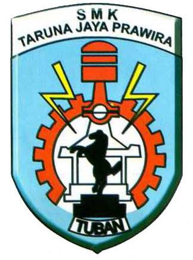

Fasilitas
Laboratorium Komputer

Perpustakaan

Bengkel Praktik

|
 |
SMK TARUNA JAYA PRAWIRANomor Telepon: (0356) 324379 |
Selamat datang di profil SMK Taruna Jaya Prawira!
SMK Taruna Jaya Prawira adalah sekolah menengah kejuruan yang berfokus pada pengembangan keterampilan dan pengetahuan siswa dalam berbagai bidang keahlian. Kami berkomitmen untuk memberikan pendidikan berkualitas tinggi dan mempersiapkan siswa untuk menghadapi tantangan dunia kerja.
Sekolah memiliki berbagai program keahlian dan fasilitas untuk mendukung kegiatan belajar. Siswa diharapkan menjadi pribadi yang disiplin dan bertanggung jawab.THE WINNER menjadi semangat bagi siswa.
| No | Program Keahlian | Lama Belajar |
|---|---|---|
| 1 | Rekayasa Perangkat Lunak | 3 tahun |
| 2 | Teknik Komputer & Jaringan | 3 tahun |
| 3 | Teknik Kendaraan Ringan | 3 tahun |
| 4 | Teknik Instalasi Tenaga Listrik | 3 tahun |
| 5 | Teknik Pemesinan | 3 tahun |
| 6 | Teknik Pengelasan | 3 tahun |